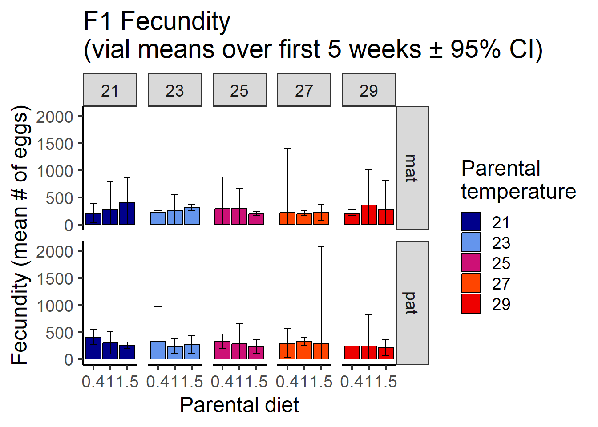

Last updated: 2023-06-26
Checks: 6 1
Knit directory:
Zajitschek_et_al_FunctionalEcology_2023/
This reproducible R Markdown analysis was created with workflowr (version 1.7.0). The Checks tab describes the reproducibility checks that were applied when the results were created. The Past versions tab lists the development history.
The R Markdown file has unstaged changes. To know which version of
the R Markdown file created these results, you’ll want to first commit
it to the Git repo. If you’re still working on the analysis, you can
ignore this warning. When you’re finished, you can run
wflow_publish to commit the R Markdown file and build the
HTML.
Great job! The global environment was empty. Objects defined in the global environment can affect the analysis in your R Markdown file in unknown ways. For reproduciblity it’s best to always run the code in an empty environment.
The command set.seed(20200903) was run prior to running
the code in the R Markdown file. Setting a seed ensures that any results
that rely on randomness, e.g. subsampling or permutations, are
reproducible.
Great job! Recording the operating system, R version, and package versions is critical for reproducibility.
Nice! There were no cached chunks for this analysis, so you can be confident that you successfully produced the results during this run.
Great job! Using relative paths to the files within your workflowr project makes it easier to run your code on other machines.
Great! You are using Git for version control. Tracking code development and connecting the code version to the results is critical for reproducibility.
The results in this page were generated with repository version 5a9dafb. See the Past versions tab to see a history of the changes made to the R Markdown and HTML files.
Note that you need to be careful to ensure that all relevant files for
the analysis have been committed to Git prior to generating the results
(you can use wflow_publish or
wflow_git_commit). workflowr only checks the R Markdown
file, but you know if there are other scripts or data files that it
depends on. Below is the status of the Git repository when the results
were generated:
Ignored files:
Ignored: .Rhistory
Ignored: .Rproj.user/
Untracked files:
Untracked: FecF1_compound.pdf
Untracked: FecF1_compound.png
Untracked: Sig_effects_on_male_mating_behaviour_F2_plots_w_means.pdf
Untracked: appraise.latF1mat.gamm1.png
Untracked: appraise.latF1mat.gamm1log.png
Untracked: data/fecF0.csv
Untracked: data/fecF1.csv
Untracked: data/malebehavF0.csv
Untracked: data/malebehavF1.csv
Untracked: data/malebehavF2.csv
Untracked: data/malebehavF3.csv
Untracked: data/survivalF1.csv
Untracked: fec.F1.plot.pdf
Untracked: latency_F0_mat_predicted.pdf
Untracked: male_latency_F2_mat_predicted.pdf
Untracked: male_latency_F2_pat_predicted.pdf
Untracked: male_mating_behaviour_F0_plots.pdf
Untracked: male_mating_behaviour_F0_plots.png
Untracked: plotF0_fecundity.pdf
Untracked: plotF0_fecundity.png
Untracked: plotF0_fecundity_rev.pdf
Untracked: plotF0_latency.pdf
Untracked: plotF0_latency.png
Untracked: plotF0_latencyTemponly.pdf
Untracked: plotF0_latencyTemponly.png
Untracked: plotF0_latency_rev.pdf
Untracked: plotF1_fecundity.pdf
Untracked: plotF1_fecundity.png
Untracked: plotF1_fecundity_mat.pdf
Untracked: plotF1_fecundity_mat_rev.pdf
Untracked: plotF1_fecundity_mat_rev_afterINK.pdf
Untracked: plotF1_fecundity_pat.pdf
Untracked: plotF1_fecundity_pat_rev.pdf
Untracked: plotF1_fecundity_pat_rev_aftterINK.pdf
Untracked: plotF1_latency.pdf
Untracked: plotF1_latency.png
Untracked: plotF1pat_duration.pdf
Untracked: plotF1pat_duration.png
Untracked: plotF1pat_duration_rev.pdf
Untracked: plotF2_mat+pat_latency+dur.png
Untracked: plotF2_mat_latency.pdf
Untracked: plotF2_mat_latency.png
Untracked: plotF2_mat_latency_rev.pdf
Untracked: plotF2_pat_dur.pdf
Untracked: plotF2_pat_dur.png
Untracked: plotF2_pat_dur_rev.pdf
Untracked: survivalcurves.pdf
Untracked: survivalcurves.png
Untracked: survivalcurves8-6-21.pdf
Untracked: survivalcurves8-6-21.png
Untracked: survivalcurves_rev20-3-2023.jpg
Untracked: survivalcurves_rev20-3-2023.pdf
Untracked: survivalcurves_rev20-3-2023.svg
Untracked: survivalcurves_rev20-3-2023_afterINK.pdf
Unstaged changes:
Modified: _workflowr.yml
Modified: analysis/fecundity.Rmd
Modified: analysis/matingbehaviour.Rmd
Modified: analysis/survival.Rmd
Modified: data/survival.csv
Note that any generated files, e.g. HTML, png, CSS, etc., are not included in this status report because it is ok for generated content to have uncommitted changes.
These are the previous versions of the repository in which changes were
made to the R Markdown (analysis/fecundity.Rmd) and HTML
(docs/fecundity.html) files. If you’ve configured a remote
Git repository (see ?wflow_git_remote), click on the
hyperlinks in the table below to view the files as they were in that
past version.
| File | Version | Author | Date | Message |
|---|---|---|---|---|
| html | 5a9dafb | zajitschek | 2023-06-25 | Build site. |
| Rmd | b9f595a | zajitschek | 2023-06-25 | 25-6-2023 |
library(readr) # read data
library(dplyr) # data structure
library(reshape2) # data structure
library(rcompanion) # mean and median (+- bootstrapped CI)
library(ggplot2) # plot
library(sjPlot) # model plots & diagnostics
library(ggeffects) # plot
library(car) # anova-style results table for glm
library(bbmle) # IC tab
library(robustbase) # robust glm
library(splines) # spline functions
library(MuMIn) # model selection
library(lmtest) # for F1 model formulation
library(sandwich) # for F1 model formulation
library(multcomp) # for F1 multiple comparisons# F0 fecundity
fec.F0 <- read_csv("./data/fecF0.csv")
colnames(fec.F0)[1] <- "generation"
fec.F0$diet_num <- as.numeric(as.character(fec.F0$diet))
fec.F0$diet <- as.factor(fec.F0$diet)
fec.F0$vial_id <- as.factor(fec.F0$vial_id)
fec.F0$rep <- as.factor(fec.F0$rep)
# F1 fecundity
fec.F1 <- read_csv("./data/fecF1.csv")
colnames(fec.F1)[1] <- "generation"
fec.F1$par_diet <- as.factor(fec.F1$par_diet) #'par_diet' stands for 'parental diet'
fec.F1$vial_id <- as.factor(fec.F1$vial_id)
fec.F1$rep <- as.factor(fec.F1$rep)#plot(fec.F0$eggs) # ok: no off-values/outliers
#max(fec.F0$eggs) # max. eggs = 141
print(paste0("5 measurement ages [days]: ", list(unique(fec.F0$age))))[1] "5 measurement ages [days]: c(5, 12, 19, 26, 33)" # 5 measurement ages: 5, 12, 19, 26, 33 days old
#Summary statistics and dataset for further analyses, containing sums of counted eggs per vial
fec.F0.a <- fec.F0 %>%
group_by(temperature, diet_num, vial_id) %>%
summarise(., vial_sum = sum(eggs), n_ages = n_distinct(age))
fec.F0.a %>% group_by(temperature, diet_num) %>%
summarise(., mean_sum_fec = mean(vial_sum), se = sd(vial_sum)/sqrt(10), sd = sd(vial_sum),
median = median(vial_sum), n_vials = n_distinct(vial_id))# A tibble: 15 × 7
# Groups: temperature [5]
temperature diet_num mean_sum_fec se sd median n_vials
<dbl> <dbl> <dbl> <dbl> <dbl> <dbl> <int>
1 21 0.4 25.7 5.52 17.4 20.5 10
2 21 1 112. 6.97 22.1 112 10
3 21 1.5 207. 7.56 23.9 207 10
4 23 0.4 30.9 5.04 15.9 27.5 10
5 23 1 134. 14.8 46.8 121 10
6 23 1.5 203. 15.4 48.8 208. 10
7 25 0.4 30.1 7.86 24.8 21.5 10
8 25 1 80.8 14.6 46.1 62 10
9 25 1.5 132 13.9 44.0 141 10
10 27 0.4 26 8.72 27.6 17 10
11 27 1 123. 18.6 58.7 124. 10
12 27 1.5 71.5 14.5 45.9 69 10
13 29 0.4 31.2 6.75 21.4 23.5 10
14 29 1 34.6 6.25 19.8 30.5 10
15 29 1.5 25.4 9.28 29.3 10.5 10boot.fec.F0 <- groupwiseMean(vial_sum ~ temperature*diet_num, data = fec.F0.a, boot = T, bca = T) #5000 bootstrap replicates for CI
boot.fec.F0 temperature diet_num n Mean Boot.mean Conf.level Trad.lower Trad.upper
1 21 0.4 10 25.7 25.7 0.95 13.20 38.2
2 21 1.0 10 112.0 112.0 0.95 96.30 128.0
3 21 1.5 10 207.0 207.0 0.95 189.00 224.0
4 23 0.4 10 30.9 31.0 0.95 19.50 42.3
5 23 1.0 10 134.0 133.0 0.95 100.00 167.0
6 23 1.5 10 203.0 202.0 0.95 168.00 237.0
7 25 0.4 10 30.1 30.2 0.95 12.30 47.9
8 25 1.0 10 80.8 80.9 0.95 47.80 114.0
9 25 1.5 10 132.0 132.0 0.95 101.00 163.0
10 27 0.4 10 26.0 26.1 0.95 6.28 45.7
11 27 1.0 10 123.0 123.0 0.95 80.90 165.0
12 27 1.5 10 71.5 71.0 0.95 38.70 104.0
13 29 0.4 10 31.2 31.1 0.95 15.90 46.5
14 29 1.0 10 34.6 34.7 0.95 20.50 48.7
15 29 1.5 10 25.4 25.4 0.95 4.41 46.4
Bca.lower Bca.upper
1 18.0 39.7
2 99.2 125.0
3 192.0 220.0
4 21.7 40.4
5 114.0 176.0
6 174.0 232.0
7 20.6 58.4
8 58.0 116.0
9 104.0 156.0
10 14.9 51.6
11 89.5 157.0
12 50.7 108.0
13 21.0 48.0
14 23.3 45.9
15 12.5 48.5mycols <- colors()[c(30, 62, 119, 504, 554)]
fec.F0.plot <- ggplot(data= boot.fec.F0, aes(x= as.factor(diet_num), y= Boot.mean, fill= as.factor(temperature))) +
#scale_fill_grey(start=0.8, end=0.3, name = "Temperature") +
scale_fill_manual(values= mycols, name = "Temperature") +
geom_bar(position=position_dodge(), stat = "identity", colour="black") +
geom_errorbar(aes(ymin= Bca.lower, ymax= Bca.upper), width=.4, , colour="black", position=position_dodge(0.9)) +
ylab("Fecundity (mean # of eggs)") +
xlab("Diet") +
ggtitle("F0 Fecundity\n(vial means over first 5 weeks \U00B1 95% CI)") +
theme_bw(base_size = 18)+
theme(panel.grid.major = element_blank(),panel.grid.minor = element_blank(), panel.border = element_blank(),
axis.line.x = element_line(), axis.line.y = element_line())
fec.F0.plot fec.F0.glm.num.1 <- glm(vial_sum ~ bs(temperature)*diet_num +
bs(temperature)*I(diet_num^2), data= fec.F0.a)
#plot(fec.F0.glm.num.1) #problematic QQ-plot for upper quantiles
#Square-root transformed response
#Refit above with new response variable 'vial_sum2'
fec.F0.a$vial_sum2 <- (fec.F0.a$vial_sum)^(1/2)
fec.F0.glm.num.2 <- glm(vial_sum2 ~ bs(temperature)*diet_num +
bs(temperature)*I(diet_num^2), data= fec.F0.a)
#plot(fec.F0.glm.num.2) #better QQ-plot
#Robust GLM
fec.F0.glm.4 <- glmrob(vial_sum2 ~ bs(temperature)*diet_num +
bs(temperature)*I(diet_num^2), family = gaussian(), data = fec.F0.a)
summary(fec.F0.glm.4)
Call: glmrob(formula = vial_sum2 ~ bs(temperature) * diet_num + bs(temperature) * I(diet_num^2), family = gaussian(), data = fec.F0.a)
Coefficients:
Estimate Std. Error z value Pr(>|z|)
(Intercept) -0.2938 1.0029 -0.293 0.76960
bs(temperature)1 10.3495 3.4018 3.042 0.00235 **
bs(temperature)2 -14.7216 2.9367 -5.013 5.36e-07 ***
bs(temperature)3 2.8179 1.4286 1.972 0.04855 *
diet_num 13.5400 2.5145 5.385 7.26e-08 ***
I(diet_num^2) -2.5140 1.3168 -1.909 0.05625 .
bs(temperature)1:diet_num -24.6827 8.5290 -2.894 0.00380 **
bs(temperature)2:diet_num 40.2693 7.3629 5.469 4.52e-08 ***
bs(temperature)3:diet_num -4.8662 3.5818 -1.359 0.17427
bs(temperature)1:I(diet_num^2) 12.5123 4.4666 2.801 0.00509 **
bs(temperature)2:I(diet_num^2) -22.6590 3.8559 -5.876 4.19e-09 ***
bs(temperature)3:I(diet_num^2) -2.6530 1.8757 -1.414 0.15726
---
Signif. codes: 0 '***' 0.001 '**' 0.01 '*' 0.05 '.' 0.1 ' ' 1
Robustness weights w.r * w.x:
117 weights are ~= 1. The remaining 33 ones are summarized as
Min. 1st Qu. Median Mean 3rd Qu. Max.
0.4007 0.4816 0.6642 0.6677 0.8438 0.9748
Number of observations: 150
Fitted by method 'Mqle' (in 13 iterations)
(Dispersion parameter for gaussian family taken to be 2.720412)
No deviance values available
Algorithmic parameters:
acc tcc
0.0001 1.3450
maxit
50
test.acc
"coef" #Remove highest interaction term from initial model
fec.F0.glm.4b <- update(fec.F0.glm.4, . ~ . - bs(temperature):I(diet_num^2))
#Compare models
anova(fec.F0.glm.4b, fec.F0.glm.4, test = "Wald")Robust Wald Test Table
Model 1: vial_sum2 ~ bs(temperature) + diet_num + I(diet_num^2) + bs(temperature):diet_num
Model 2: vial_sum2 ~ bs(temperature) * diet_num + bs(temperature) * I(diet_num^2)
Models fitted by method 'Mqle'
pseudoDf Test.Stat Df Pr(>chisq)
1 141
2 138 40.129 3 1e-08 ***
---
Signif. codes: 0 '***' 0.001 '**' 0.01 '*' 0.05 '.' 0.1 ' ' 1predrob.4 <- ggpredict(fec.F0.glm.4, c("temperature", "diet_num"))
predFecF0_plot <- ggplot(predrob.4, aes(x, predicted)) +
geom_point(data = fec.F0.a, aes(x = temperature, y = vial_sum2, shape = factor(diet_num), colour = factor(diet_num), stroke=NA, alpha = 0.1), size = 3, position= position_jitterdodge(dodge.width = 0.8, jitter.width = 0.1), inherit.aes = F) +
geom_line(aes(linetype= group, color= group), linewidth = 1.5) +
geom_ribbon(aes(ymin=conf.low, ymax=conf.high, fill=group), alpha=0.15) +
scale_color_manual(name ="Diet", values=c("#F8766D", "#619CFF", "#00BA38"), labels=c("restricted", "standard", "rich")) +
scale_fill_manual(name ="Diet", values=c("#F8766D", "#619CFF", "#00BA38"), labels=c("restricted", "standard", "rich")) +
scale_shape_discrete(name ="Diet", labels=c("restricted", "standard", "rich")) +
scale_linetype_manual(name ="Diet", values = c("solid", "dashed", "dotted"), labels=c("restricted", "standard", "rich")) +
scale_x_continuous(breaks=c(21, 23, 25, 27, 29)) +
labs(title = "", color = "Diet", y = "Total fecundity\n(square-root, weeks 1 to 5)", x = "Temperature [degree Celsius]") + theme_classic(base_size = 23) +
guides(alpha = "none")
predFecF0_plot#plot(fec.F1$eggs) # ok: no off-values/outliers
#max(fec.F1$eggs) # max. eggs = 217
print(paste0("5 measurement ages [days]: ", list(unique(fec.F1$age))))[1] "5 measurement ages [days]: c(4, 11, 18, 25, 32)" # 5 measurement ages: 4, 11, 18, 25, 32 days old
fec.F1.a <- fec.F1 %>%
group_by(par_temp, par_diet, par_eff, vial_id) %>%
summarise(., vial_sum = sum(eggs), n_ages = n_distinct(age))
fec.F1.a %>% group_by(par_temp, par_diet, par_eff) %>%
summarise(., mean_sum_fec = mean(vial_sum), se = sd(vial_sum)/sqrt(length(vial_sum)),
sd = sd(vial_sum), median = median(vial_sum), n_vials = n_distinct(vial_id))# A tibble: 30 × 8
# Groups: par_temp, par_diet [15]
par_temp par_diet par_eff mean_sum_fec se sd median n_vials
<dbl> <fct> <chr> <dbl> <dbl> <dbl> <dbl> <int>
1 21 0.4 mat 212. 13.5 19.1 212. 2
2 21 0.4 pat 410 11 15.6 410 2
3 21 1 mat 280. 40.5 57.3 280. 2
4 21 1 pat 300. 16.5 23.3 300. 2
5 21 1.5 mat 412 36 50.9 412 2
6 21 1.5 pat 254 5 7.07 254 2
7 23 0.4 mat 228. 2.5 3.54 228. 2
8 23 0.4 pat 322. 50.5 71.4 322. 2
9 23 1 mat 260. 23.5 33.2 260. 2
10 23 1 pat 236. 10.5 14.8 236. 2
# ℹ 20 more rowsF1.fec.CI <- groupwiseMean(vial_sum ~ par_temp*par_diet*par_eff, data = fec.F1.a, boot = F, bca = F)
F1.fec.CI$Trad.lower[F1.fec.CI$Trad.lower < 0] <- 0 #set negative lower CI range values to zeromycols <- colors()[c(30, 62, 119, 504, 554)]
fec.F1.plot <- ggplot(data= F1.fec.CI, aes(x= as.factor(par_diet), y= Mean, fill= as.factor(par_temp))) +
#scale_fill_grey(start=0.8, end=0.3, name = "Temperature") +
scale_fill_manual(values= mycols, name = "Parental\ntemperature") +
geom_bar(position=position_dodge(), stat = "identity", colour="black") +
geom_errorbar(aes(ymin= Trad.lower, ymax= Trad.upper), width=.4, , colour="black", position=position_dodge(0.9)) +
ylab("Fecundity (mean # of eggs)") +
xlab("Parental diet") +
ggtitle("F1 Fecundity\n(vial means over first 5 weeks \U00B1 95% CI)") +
theme_bw(base_size = 18)+
theme(panel.grid.major = element_blank(),panel.grid.minor = element_blank(), panel.border = element_blank(),
axis.line.x = element_line(), axis.line.y = element_line()) +
facet_grid(vars(par_eff), vars(par_temp))
fec.F1.plot 
fec.F1.a$par_diet_num <- as.numeric(as.character(fec.F1.a$par_diet))
fec.F1.a$vial_sum2 <- (fec.F1.a$vial_sum)^(1/2)#All independent variables as factor to make the model less complex; separate for each level of par_eff
fec.F1.a$par_temp_fac <- as.factor(fec.F1.a$par_temp)
# Maternal effects with robust covariance matrix
fec.F1.a.mat <- subset(fec.F1.a, par_eff=="mat")
fec.F1.glm.rev1c.mat <- aov(vial_sum ~ par_temp_fac*par_diet, data = fec.F1.a.mat)
fec.F1.glm.rev1c.mat.coef <- coeftest(fec.F1.glm.rev1c.mat, vcov = vcovHC)
fec.F1.glm.rev1c.mat2 <- aov(vial_sum ~ par_temp_fac+par_diet, data = fec.F1.a.mat)
# Model comparison
waldtest(fec.F1.glm.rev1c.mat, fec.F1.glm.rev1c.mat2, vcov = vcovHC, test = "F")Wald test
Model 1: vial_sum ~ par_temp_fac * par_diet
Model 2: vial_sum ~ par_temp_fac + par_diet
Res.Df Df F Pr(>F)
1 15
2 23 -8 2.7542 0.04325 *
---
Signif. codes: 0 '***' 0.001 '**' 0.01 '*' 0.05 '.' 0.1 ' ' 1Tukey. <- contrMat(table(fec.F1.a.mat$par_temp_fac), "Tukey")
K1. <- cbind(Tukey., matrix(0, nrow = nrow(Tukey.), ncol = ncol(Tukey.)), matrix(0, nrow = nrow(Tukey.), ncol = ncol(Tukey.)))
rownames(K1.) <- paste(levels(fec.F1.a$par_diet)[1], rownames(K1.), sep = ":")
K2. <- cbind(matrix(0, nrow = nrow(Tukey.), ncol = ncol(Tukey.)), Tukey., matrix(0, nrow = nrow(Tukey.), ncol = ncol(Tukey.)))
rownames(K2.) <- paste(levels(fec.F1.a$par_diet)[2], rownames(K2.), sep = ":")
K3. <- cbind(matrix(0, nrow = nrow(Tukey.), ncol = ncol(Tukey.)), matrix(0, nrow = nrow(Tukey.), ncol = ncol(Tukey.)),Tukey.)
rownames(K3.) <- paste(levels(fec.F1.a$par_diet)[3], rownames(K3.), sep = ":")
K. <- rbind(K1., K2., K3.)
colnames(K.) <- c(colnames(Tukey.), colnames(Tukey.), colnames(Tukey.))
summary(glht(fec.F1.glm.rev1c.mat, linfct = K. %*% X., vcov = sandwich::vcovHC(fec.F1.glm.rev1c.mat)), test = adjusted("BH"))
Simultaneous Tests for General Linear Hypotheses
Fit: aov(formula = vial_sum ~ par_temp_fac * par_diet, data = fec.F1.a.mat)
Linear Hypotheses:
Estimate Std. Error t value Pr(>|t|)
0.4:23 - 21 == 0 17.000 19.416 0.876 0.65398
0.4:25 - 21 == 0 80.500 67.797 1.187 0.53227
0.4:27 - 21 == 0 9.500 132.900 0.071 0.97319
0.4:29 - 21 == 0 5.000 20.125 0.248 0.89684
0.4:25 - 23 == 0 63.500 65.150 0.975 0.60914
0.4:27 - 23 == 0 -7.500 131.569 -0.057 0.97319
0.4:29 - 23 == 0 -12.000 7.280 -1.648 0.36738
0.4:27 - 25 == 0 -71.000 146.731 -0.484 0.79433
0.4:29 - 25 == 0 -75.500 65.364 -1.155 0.53227
0.4:29 - 27 == 0 -4.500 131.676 -0.034 0.97319
1:23 - 21 == 0 -19.000 66.219 -0.287 0.89684
1:25 - 21 == 0 20.000 70.036 0.286 0.89684
1:27 - 21 == 0 -74.000 57.489 -1.287 0.53227
1:29 - 21 == 0 78.000 93.771 0.832 0.65398
1:25 - 23 == 0 39.000 52.240 0.747 0.66696
1:27 - 23 == 0 -55.000 33.601 -1.637 0.36738
1:29 - 23 == 0 97.000 81.345 1.192 0.53227
1:27 - 25 == 0 -94.000 40.608 -2.315 0.21120
1:29 - 25 == 0 58.000 84.481 0.687 0.68570
1:29 - 27 == 0 152.000 74.411 2.043 0.29533
1.5:23 - 21 == 0 -96.000 51.400 -1.868 0.32798
1.5:25 - 21 == 0 -207.500 51.034 -4.066 0.01014 *
1.5:27 - 21 == 0 -186.000 53.666 -3.466 0.02593 *
1.5:29 - 21 == 0 -145.000 79.310 -1.828 0.32798
1.5:25 - 23 == 0 -111.500 7.906 -14.104 1.39e-08 ***
1.5:27 - 23 == 0 -90.000 18.385 -4.895 0.00291 **
1.5:29 - 23 == 0 -49.000 61.221 -0.800 0.65398
1.5:27 - 25 == 0 21.500 17.335 1.240 0.53227
1.5:29 - 25 == 0 62.500 60.914 1.026 0.60213
1.5:29 - 27 == 0 41.000 63.135 0.649 0.68595
---
Signif. codes: 0 ‘***’ 0.001 ‘**’ 0.01 ‘*’ 0.05 ‘.’ 0.1 ‘ ’ 1
(Adjusted p values reported -- BH method)# Paternal effects with robust covariance matrix
fec.F1.a.pat <- subset(fec.F1.a, par_eff=="pat")
fec.F1.glm.rev1c.pat <- aov(vial_sum ~ par_temp_fac*par_diet, data = fec.F1.a.pat)
coeftest(fec.F1.glm.rev1c.pat, vcov = sandwich::vcovHC)
t test of coefficients:
Estimate Std. Error t value Pr(>|t|)
(Intercept) 410.000 15.556 26.3558 5.607e-14 ***
par_temp_fac23 -87.500 73.092 -1.1971 0.249839
par_temp_fac25 -79.500 21.506 -3.6967 0.002154 **
par_temp_fac27 -118.000 33.526 -3.5196 0.003096 **
par_temp_fac29 -165.000 43.863 -3.7617 0.001885 **
par_diet1 -109.500 28.045 -3.9045 0.001408 **
par_diet1.5 -156.000 17.088 -9.1292 1.634e-07 ***
par_temp_fac23:par_diet1 23.500 78.150 0.3007 0.767770
par_temp_fac25:par_diet1 59.000 52.981 1.1136 0.282976
par_temp_fac27:par_diet1 150.500 41.719 3.6074 0.002586 **
par_temp_fac29:par_diet1 107.000 81.296 1.3162 0.207872
par_temp_fac23:par_diet1.5 97.500 75.700 1.2880 0.217269
par_temp_fac25:par_diet1.5 57.500 26.693 2.1541 0.047897 *
par_temp_fac27:par_diet1.5 155.000 202.326 0.7661 0.455511
par_temp_fac29:par_diet1.5 126.500 47.313 2.6737 0.017349 *
---
Signif. codes: 0 '***' 0.001 '**' 0.01 '*' 0.05 '.' 0.1 ' ' 1fec.F1.glm.rev1c.pat2 <- aov(vial_sum ~ par_temp_fac+par_diet, data = fec.F1.a.pat)
# Model comparison
waldtest(fec.F1.glm.rev1c.pat, fec.F1.glm.rev1c.pat2, vcov = vcovHC, test = "F")Wald test
Model 1: vial_sum ~ par_temp_fac * par_diet
Model 2: vial_sum ~ par_temp_fac + par_diet
Res.Df Df F Pr(>F)
1 15
2 23 -8 3.9926 0.01013 *
---
Signif. codes: 0 '***' 0.001 '**' 0.01 '*' 0.05 '.' 0.1 ' ' 1Tukey <- contrMat(table(fec.F1.a.pat$par_temp_fac), "Tukey")
K1 <- cbind(Tukey, matrix(0, nrow = nrow(Tukey), ncol = ncol(Tukey)), matrix(0, nrow = nrow(Tukey), ncol = ncol(Tukey)))
rownames(K1) <- paste(levels(fec.F1.a$par_diet)[1], rownames(K1), sep = ":")
K2 <- cbind(matrix(0, nrow = nrow(Tukey), ncol = ncol(Tukey)), Tukey, matrix(0, nrow = nrow(Tukey), ncol = ncol(Tukey)))
rownames(K2) <- paste(levels(fec.F1.a$par_diet)[2], rownames(K2), sep = ":")
K3 <- cbind(matrix(0, nrow = nrow(Tukey), ncol = ncol(Tukey)), matrix(0, nrow = nrow(Tukey), ncol = ncol(Tukey)),Tukey)
rownames(K3) <- paste(levels(fec.F1.a$par_diet)[3], rownames(K3), sep = ":")
K <- rbind(K1, K2, K3)
colnames(K) <- c(colnames(Tukey), colnames(Tukey), colnames(Tukey))
summary(glht(fec.F1.glm.rev1c.pat, linfct = K %*% X, vcov = sandwich::vcovHC(fec.F1.glm.rev1c.pat)), test = adjusted("BH"))
Simultaneous Tests for General Linear Hypotheses
Fit: aov(formula = vial_sum ~ par_temp_fac * par_diet, data = fec.F1.a.pat)
Linear Hypotheses:
Estimate Std. Error t value Pr(>|t|)
0.4:23 - 21 == 0 -87.50 73.09 -1.197 0.5288
0.4:25 - 21 == 0 -79.50 21.51 -3.697 0.0215 *
0.4:27 - 21 == 0 -118.00 33.53 -3.520 0.0232 *
0.4:29 - 21 == 0 -165.00 43.86 -3.762 0.0215 *
0.4:25 - 23 == 0 8.00 72.94 0.110 0.9288
0.4:27 - 23 == 0 -30.50 77.35 -0.394 0.8534
0.4:29 - 23 == 0 -77.50 82.36 -0.941 0.6133
0.4:27 - 25 == 0 -38.50 33.20 -1.160 0.5288
0.4:29 - 25 == 0 -85.50 43.62 -1.960 0.2581
0.4:29 - 27 == 0 -47.00 50.64 -0.928 0.6133
1:23 - 21 == 0 -64.00 27.66 -2.314 0.2116
1:25 - 21 == 0 -20.50 48.42 -0.423 0.8534
1:27 - 21 == 0 32.50 24.83 1.309 0.5256
1:29 - 21 == 0 -58.00 68.45 -0.847 0.6475
1:25 - 23 == 0 43.50 44.95 0.968 0.6133
1:27 - 23 == 0 96.50 17.10 5.642 0.0014 **
1:29 - 23 == 0 6.00 66.04 0.091 0.9288
1:27 - 25 == 0 53.00 43.27 1.225 0.5288
1:29 - 25 == 0 -37.50 77.08 -0.487 0.8534
1:29 - 27 == 0 -90.50 64.90 -1.394 0.5125
1.5:23 - 21 == 0 10.00 19.70 0.508 0.8534
1.5:25 - 21 == 0 -22.00 15.81 -1.391 0.5125
1.5:27 - 21 == 0 37.00 199.53 0.185 0.9288
1.5:29 - 21 == 0 -38.50 17.73 -2.171 0.2320
1.5:25 - 23 == 0 -32.00 23.20 -1.380 0.5125
1.5:27 - 23 == 0 27.00 200.25 0.135 0.9288
1.5:29 - 23 == 0 -48.50 24.55 -1.976 0.2581
1.5:27 - 25 == 0 59.00 199.91 0.295 0.8907
1.5:29 - 25 == 0 -16.50 21.55 -0.766 0.6837
1.5:29 - 27 == 0 -75.50 200.07 -0.377 0.8534
---
Signif. codes: 0 ‘***’ 0.001 ‘**’ 0.01 ‘*’ 0.05 ‘.’ 0.1 ‘ ’ 1
(Adjusted p values reported -- BH method)#Maternal
predrob.F1.mat <- ggpredict(fec.F1.glm.rev1c.mat, c("par_temp_fac", "par_diet"), vcov.fun = "vcovHC", vcov.type = "HC")
predFecF1.mat <- plot(predrob.F1.mat, rawdata = T, facet = T, connect.lines = T, ci.style = "errorbar", line.size = 1.5, dot.size = 5)
predFecF1_plot.mat <- predFecF1.mat +
labs(title = "Maternal diet", y = "Total fecundity\n(weeks 1 to 5)", x = "Temperature [degree Celsius]", color = "Parental\ndiet") + theme_classic(base_size = 23)
predFecF1_plot.mat#Paternal
predrob.F1.pat <- ggpredict(fec.F1.glm.rev1c.pat, c("par_temp_fac", "par_diet"), vcov.fun = "vcovHC", vcov.type = "HC")
plot(predrob.F1.pat, rawdata = T, facet = T, connect.lines = T, ci.style = "errorbar", line.size = 1.5, dot.size = 5)-> predFecF1.pat
predFecF1_plot.pat <- predFecF1.pat +
labs(title = "Paternal diet", y = "Total fecundity\n(weeks 1 to 5)", x = "Temperature [degree Celsius]", color = "Parental\ndiet") + theme_classic(base_size = 23)
predFecF1_plot.pat
sessionInfo()R version 4.3.1 (2023-06-16 ucrt)
Platform: x86_64-w64-mingw32/x64 (64-bit)
Running under: Windows 10 x64 (build 19043)
Matrix products: default
locale:
[1] LC_COLLATE=English_United Kingdom.utf8
[2] LC_CTYPE=English_United Kingdom.utf8
[3] LC_MONETARY=English_United Kingdom.utf8
[4] LC_NUMERIC=C
[5] LC_TIME=English_United Kingdom.utf8
time zone: Europe/London
tzcode source: internal
attached base packages:
[1] splines stats4 stats graphics grDevices utils datasets
[8] methods base
other attached packages:
[1] multcomp_1.4-25 TH.data_1.1-2 MASS_7.3-60 survival_3.5-5
[5] mvtnorm_1.2-2 sandwich_3.0-2 lmtest_0.9-40 zoo_1.8-12
[9] MuMIn_1.47.5 robustbase_0.99-0 bbmle_1.0.25 car_3.1-2
[13] carData_3.0-5 ggeffects_1.2.3 sjPlot_2.8.14 ggplot2_3.4.2
[17] rcompanion_2.4.30 reshape2_1.4.4 dplyr_1.1.2 readr_2.1.4
[21] workflowr_1.7.0
loaded via a namespace (and not attached):
[1] libcoin_1.0-9 rstudioapi_0.14 jsonlite_1.8.5
[4] magrittr_2.0.3 estimability_1.4.1 modeltools_0.2-23
[7] farver_2.1.1 nloptr_2.0.3 rmarkdown_2.22
[10] fs_1.6.2 vctrs_0.6.3 minqa_1.2.5
[13] forcats_1.0.0 htmltools_0.5.5 haven_2.5.2
[16] broom_1.0.5 cellranger_1.1.0 sjmisc_2.8.9
[19] sass_0.4.6 bslib_0.5.0 plyr_1.8.8
[22] emmeans_1.8.6 rootSolve_1.8.2.3 cachem_1.0.8
[25] whisker_0.4.1 lifecycle_1.0.3 pkgconfig_2.0.3
[28] sjlabelled_1.2.0 Matrix_1.5-4.1 R6_2.5.1
[31] fastmap_1.1.1 digest_0.6.31 Exact_3.2
[34] numDeriv_2016.8-1.1 colorspace_2.1-0 ps_1.7.5
[37] rprojroot_2.0.3 labeling_0.4.2 fansi_1.0.4
[40] httr_1.4.6 abind_1.4-5 compiler_4.3.1
[43] proxy_0.4-27 bit64_4.0.5 withr_2.5.0
[46] backports_1.4.1 performance_0.10.4 highr_0.10
[49] sjstats_0.18.2 gld_2.6.6 tools_4.3.1
[52] httpuv_1.6.11 glue_1.6.2 callr_3.7.3
[55] nlme_3.1-162 promises_1.2.0.1 grid_4.3.1
[58] getPass_0.2-2 generics_0.1.3 gtable_0.3.3
[61] nortest_1.0-4 tzdb_0.4.0 class_7.3-22
[64] tidyr_1.3.0 data.table_1.14.8 lmom_2.9
[67] hms_1.1.3 coin_1.4-2 utf8_1.2.3
[70] pillar_1.9.0 stringr_1.5.0 vroom_1.6.3
[73] later_1.3.1 lattice_0.21-8 bit_4.0.5
[76] tidyselect_1.2.0 knitr_1.43 git2r_0.32.0
[79] xfun_0.39 expm_0.999-7 matrixStats_1.0.0
[82] DEoptimR_1.0-14 stringi_1.7.12 yaml_2.3.7
[85] boot_1.3-28.1 evaluate_0.21 codetools_0.2-19
[88] tibble_3.2.1 multcompView_0.1-9 cli_3.6.1
[91] xtable_1.8-4 DescTools_0.99.49 munsell_0.5.0
[94] processx_3.8.1 jquerylib_0.1.4 modelr_0.1.11
[97] Rcpp_1.0.10 readxl_1.4.2 bdsmatrix_1.3-6
[100] parallel_4.3.1 bayestestR_0.13.1 lme4_1.1-33
[103] scales_1.2.1 e1071_1.7-13 insight_0.19.2
[106] purrr_1.0.1 crayon_1.5.2 rlang_1.1.1